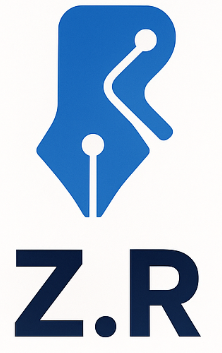
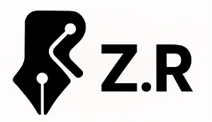
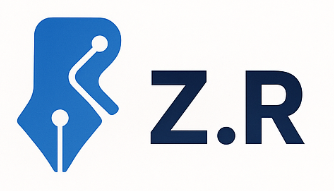

З текстом знизу
З текстом праворуч
Ахроматичний логотип
На логотипі зображено стилізоване поєднання пера (як символу письма або творчості) та елементів електричної схеми (траси та вузли), що символізує поєднання творчості та ІТ.
Primary: RGB(74, 144, 226)
Background: RGB(245, 247, 250)
Text: RGB(51, 51, 51)